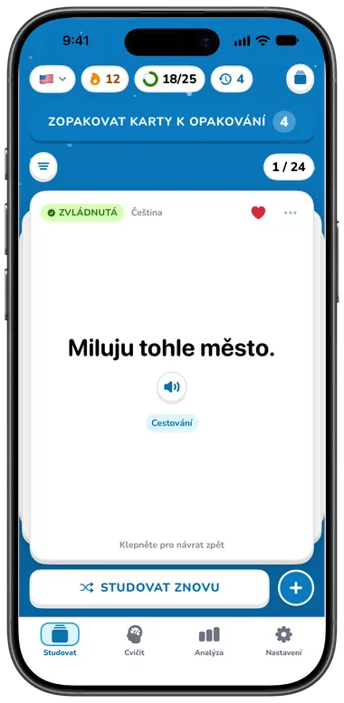
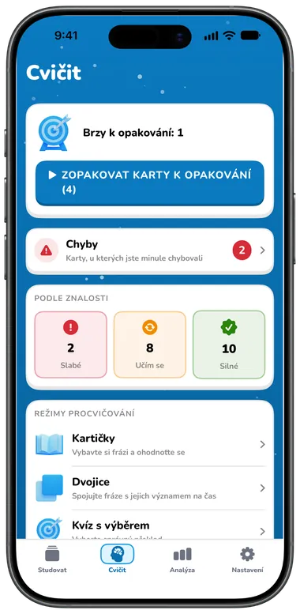
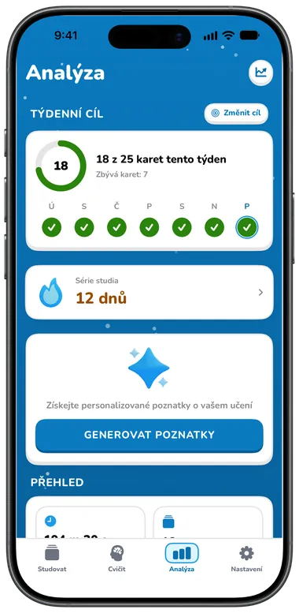

Funkce
Vše, co potřebujete k mluvení
Kartičky, které si poslechnete, hry, se kterými opakování baví, a procvičování, při kterém slova opravdu vyslovíte nahlas. Začněte zdarma, s Premium, až budete chtít víc.

Start během vteřin
Vyberte jazyky, úroveň, cíl a zájmy a Flippin za vás sestaví první balíček.
- Úvodní sada hotových kolekcí frází podle vašich zájmů, takže balíček nebude nikdy prázdný
- Vyzkoušejte tři skutečné kartičky už při nastavení: otočte je, poslechněte si je a označte Znovu nebo Umím
- Žádný účet není potřeba; přihlášení přes Apple je volitelné


Kartičky raz dva
Napište slovo nebo frázi a za okamžik se překlad doplní sám. Můžete ho upravit; vaše změny zůstanou zachované.
- Překlad Apple přímo v zařízení, pokud je jazyk stažený, jinak Google
- Jedním klepnutím prohodíte jazyky a píšete v kterémkoli z nich
- Poznámky, až pět štítků a oblíbené na každé kartičce
- Obrázky z Pexels a emoji, napsané ručně nebo navržené AI Premium


Slyšte každé slovo
Klepněte na reproduktor na kterékoli straně kartičky, v jakémkoli seznamu nebo při procvičování.
- Bezplatné hlasy Google (devět anglických přízvuků) a systémové hlasy, které fungují i offline
- Nastavitelná rychlost od 0,5× do 2×
- Téměř 1 000 přirozených hlasů Speechify s filtry, ukázkami a doporučeními pro každý jazyk Premium


Otočte, posuňte, učte se
Váš balíček jako hromádka papírových 3D kartiček. Klepnutím otočíte, přejetím přejdete na další, zamícháním začnete znovu.
- Každá kartička ukazuje, jestli je nová, učíte se ji, nebo je zvládnutá
- Filtrujte podle oblíbených, obtížných kartiček nebo štítku
- Režim učení ukazuje nejdřív nový jazyk, Režim cestování nejdřív ten váš
- Režim emoji ukáže na rubu místo překladu emoji Premium

Sedm způsobů procvičování
Procvičování samo vybere kartičky, které to potřebují: nejdřív ty na řadě, pak chyby, nakonec nové. Nebo si procvičte své chyby či slabé, rozpracované nebo silné kartičky.


| Režim | Co děláte | Plán |
|---|---|---|
| Kartičky | Vybavte si význam, ukažte odpověď a pak Znovu nebo Umím (nebo přejeďte) | Zdarma |
| Dvojice | Spojte šest dvojic ve dvou sloupcích na čas | Zdarma |
| Kvíz s výběrem | Vyberte správný překlad ze čtyř dlaždic | Premium |
| Doplňovačka | Doplňte větu, pod kterou vidíte její význam | Premium |
| Poslech | Poslechněte si frázi (znovu nebo zpomaleně) a vyberte význam | Premium |
| Psaní | Napište frázi; drobné chyby v diakritice nebo interpunkci se počítají jako skoro správně | Premium |
| Mluvení | Podržte tlačítko a frázi vyslovte; rozpoznávání řeči ji zkontroluje a v nouzi ji můžete napsat | Premium |
Každá lekce končí shrnutím: správné odpovědi, přesnost, čas, co bude brzy na řadě a váš týdenní cíl. Kartičky, které nevíte, se vrátí o pár kartiček později a každá odpověď aktualizuje zvládnutí kartičky a naplánuje její další opakování.
Série a cíle
Malá denní vítězství, vidět na první pohled.
- Série studia s měsíčním kalendářem, nejlepší sérií a dalším milníkem (7, 30, 100, 365 dní)
- Týdenní cíl 10, 25, 50 nebo 100 kartiček s kroužkem pro každý den v týdnu
- Denní připomínka učení a připomínka obtížných kartiček v časech, které si vyberete


Sledujte svůj pokrok
Zdarma: vaše série, týdenní cíl, celkový čas učení, dnes procvičené kartičky a lekce a celková přesnost.
- Grafy času učení po týdnech, měsících nebo letech Premium
- Rozložení zvládnutí, vývoj přesnosti, milníky a odznaky Premium
- AI trenér učení s denním postřehem a doporučeními podle vašeho týdne Premium


AI konverzace
Popište, co se chcete naučit, zvolte 10, 15 nebo 20 kartiček a získejte připravenou kolekci pro svou jazykovou dvojici a úroveň.
- Klepnutím kteroukoli kartičku upravíte, vyberete, které přidat, necháte vytvořit znovu nebo upravíte zadání
- Posledních 20 výsledků se uchová jako koncepty, i offline
- Uživatelé zdarma si před přechodem na Premium mohou prohlédnout ukázkovou sadu
Premium Funkce AI vyžadují Premium a přihlášení přes Apple. Obsah vytvořený AI může obsahovat chyby.


30 kolekcí frází
168 užitečných frází v každém jazyce v 11 tématech: základy, cestování, společenský život, životní styl, jídlo, nouzové situace, nakupování, počasí, technologie, práce a zábava.
- Prohlédněte si každou kolekci a vyberte kartičky, které chcete
- Jedna kolekce na téma je zdarma (celkem 11) Zdarma
- Všech 30 kolekcí Premium


A drobnosti, které potěší

Synchronizace přes iCloud
Kartičky, štítky a historie procvičování se synchronizují mezi iPhonem a iPadem přes váš vlastní iCloud, s účtem i bez něj.

Volitelný účet
Přihlášení přes Apple synchronizuje váš profil, sérii a předplatné mezi zařízeními. Po odhlášení vám kartičky zůstanou.
Světlý i tmavý vzhled
Ve dne jasná obloha, v tmavém režimu hvězdná noc, podle systému nebo podle vaší volby.
34 jazyků aplikace
Aplikace mluví i vaším jazykem, s rozložením zprava doleva pro arabštinu a hebrejštinu.
Zdarma a Premium
Bezplatný plán zahrnuje až 40 kartiček v jedné jazykové dvojici. Premium odstraní omezení a přidá vše, co je výše označeno jako Premium.
Premium stojí $5.99/měsíc, $39.99/rok (se 7denní zkušební verzí zdarma pro oprávněné nové předplatitele ročního plánu) nebo jednorázově $99.99 za doživotní přístup. Ceny jsou v USD a liší se podle země nebo oblasti; App Store vám cenu ukáže před nákupem. Viz Podmínky použití.
Porovnáváte aplikace? Přečtěte si Flippin vs. Anki.

Začněte mluvit ještě dnes
Stáhněte si Flippin zdarma, vyberte jazyky a vaše první fráze jsou připravené k procvičování.
Pro iPhone a iPad · iOS 18 nebo novější